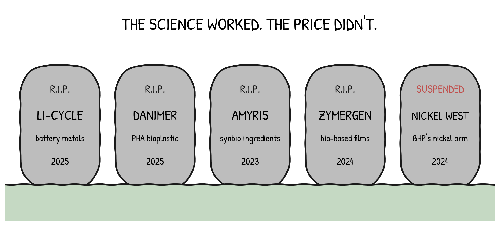
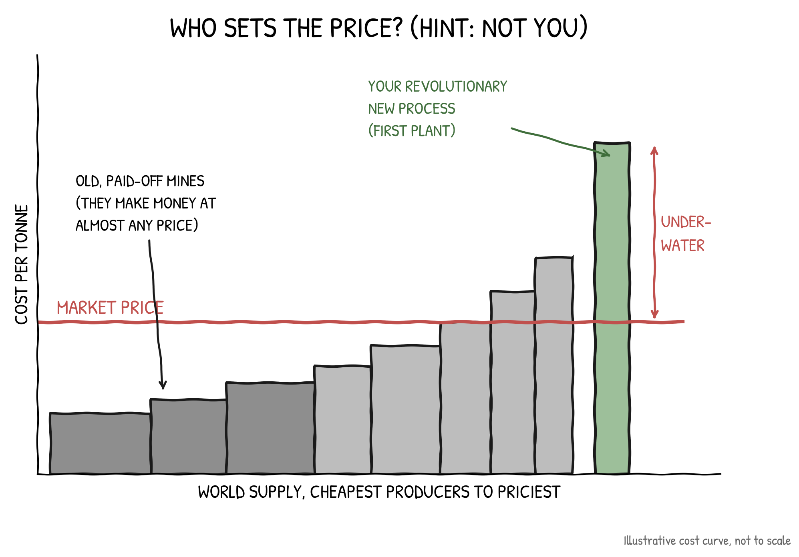
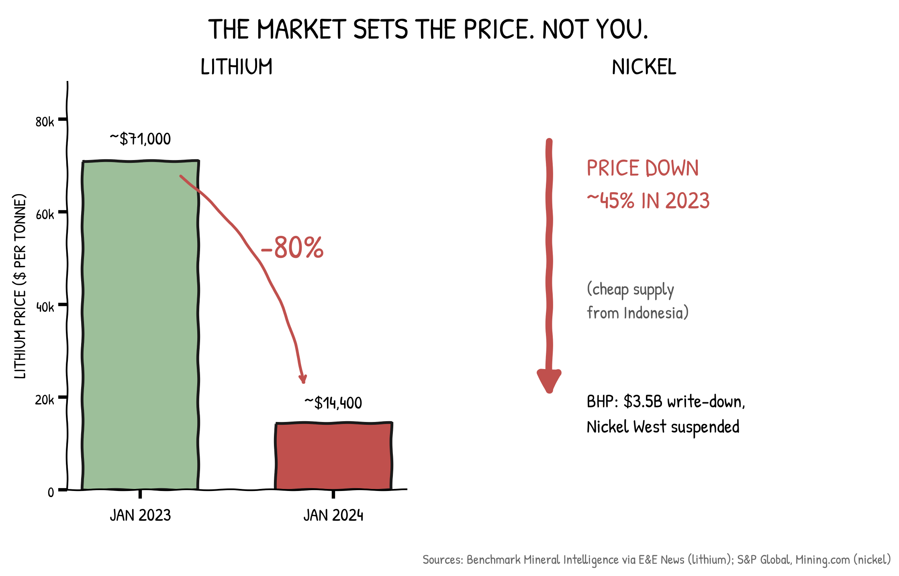
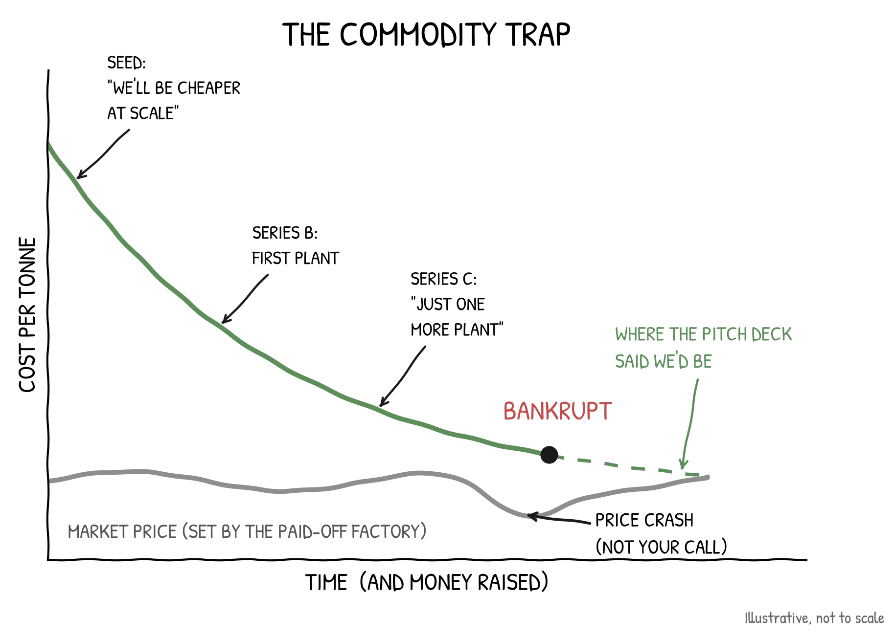
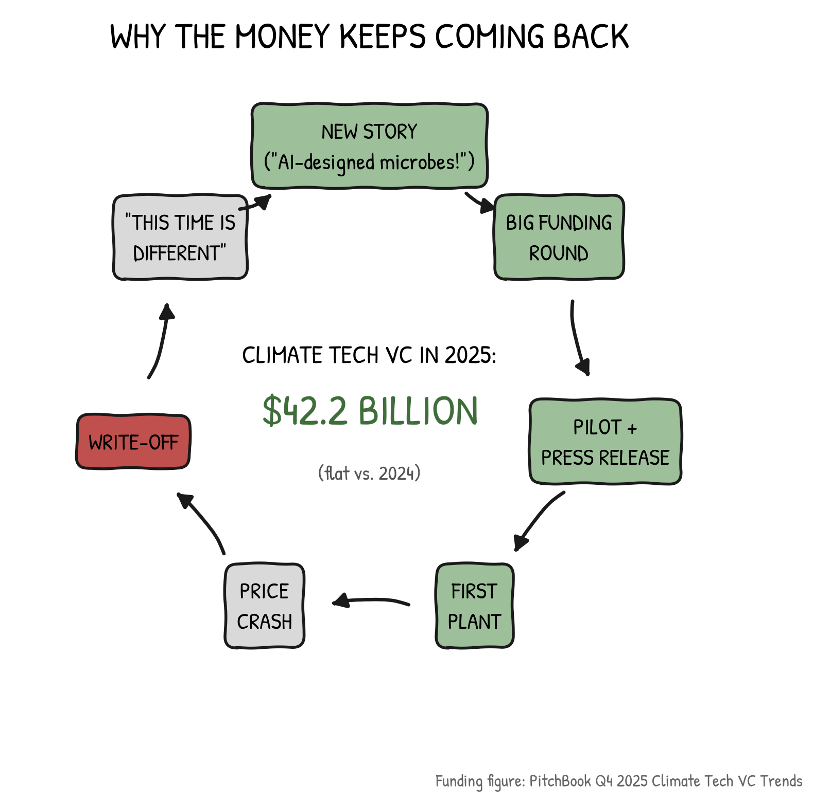
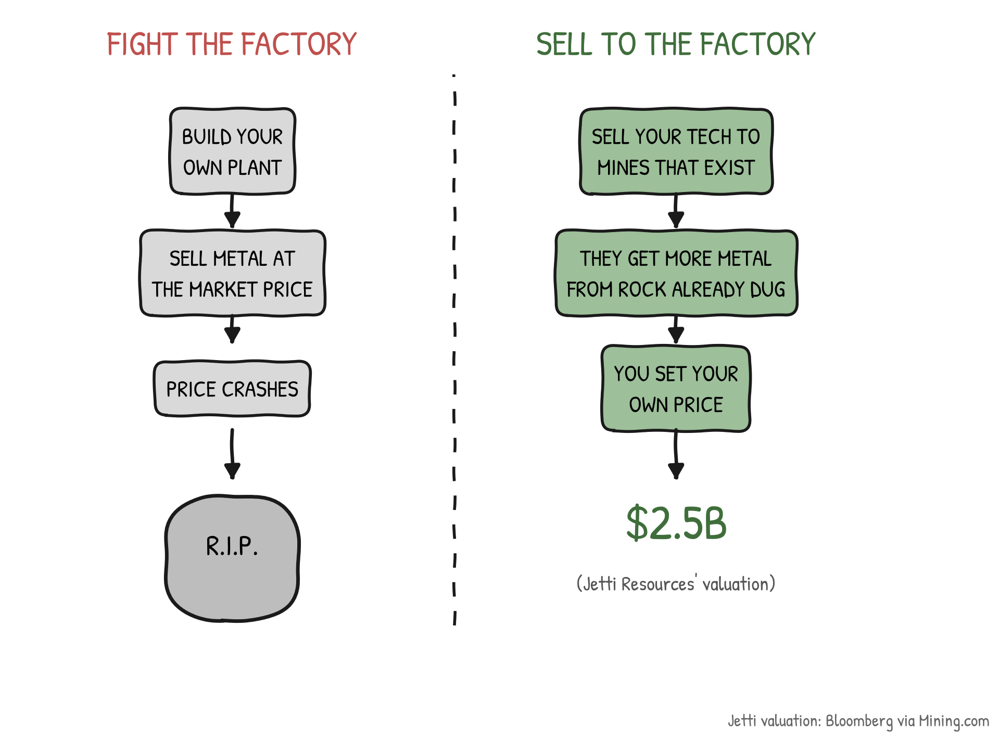

In 2023, Li-Cycle was building North America’s first big battery-metals “hub” in Rochester, New York — a plant to turn old lithium-ion batteries back into nickel, cobalt and lithium. The budget was $560 million. By October 2023, costs were heading toward $1 billion and construction stopped.
In November 2024, the U.S. Department of Energy closed a loan of up to $475 million to get it going again. Li-Cycle couldn’t raise the equity it needed to draw on it. In May 2025, the Toronto company filed for bankruptcy, and Glencore — one of the world’s largest commodity companies — put in a bid of about $40 million for its assets.
The hub never started operating.
What a commodity actually is
Here’s the simplest definition I know: a commodity is anything where the market sets the price, and you don’t.
Copper, nickel, lithium, plastic, indigo dye. It doesn’t matter how clever your process is. The day you sell, someone else tells you what it’s worth — usually a screen at the London Metal Exchange.
That leads to my argument:
If the market sets your price, your technology isn’t your product. Your cost is. And you’re competing on cost against factories that were paid off decades ago.
Who actually sets the price
Picture every mine and plant in the world lined up from cheapest to most expensive. Economists call this the cost curve. The market price settles around the cost of the last producer needed to meet demand.
At the bottom of the curve are old, paid-off mines and plants with decades of process tuning behind them. They make money at almost any price.
A startup with a new process enters at the top: a first-of-a-kind plant, fresh debt, yields still climbing. A “revolutionary” process only matters if it drags you to the bottom of that curve. Greener, cleaner or more elegant doesn’t change the price you’re paid.

When the incumbents flood the market
And the price can move against you fast.
- Nickel. A flood of cheap supply from Indonesia sent nickel prices down about 45% in 2023. Australia’s nickel industry was gutted. BHP — the biggest miner in the world — took a $3.5 billion write-down and suspended its Nickel West operations in 2024.
- Lithium. Prices fell about 80% in a year, from roughly $71,000 a tonne in January 2023 to about $14,400 by January 2024, on a surge of Chinese supply. Projects across the West were shelved, and startups selling new ways to extract lithium found investors suddenly nervous.

If BHP can’t survive the cost curve with a century of mines behind it, a startup with one plant and a pitch deck won’t.
The same trap, grown in a bioreactor
It isn’t just metals. Startups that use microbes to make plastics, dyes and chemicals walk into the same trap, because they sell into markets where petrochemicals set the price.
Danimer Scientific made PHA, a plastic produced by bacteria that breaks down even in the ocean. In 2021, Georgia announced a $700 million expansion of its operations. In March 2025, it filed for Chapter 11 with about $450 million of debt. MIT’s technology roadmap puts PHA at $3–6 per kg against $1.3–1.9 for the polyethylene it replaces — and because plastic is made from oil, every time oil falls, the gap gets wider.
Amyris, a pioneer of synthetic-biology ingredients, filed for Chapter 11 in 2023 with more than $1 billion of debt. Zymergen went public in 2021 at roughly a $3 billion valuation, was sold for about $300 million a year later, and was liquidated in 2024. Different science, same curve:

So why does the money keep coming back?
This is the part that should bother everyone. After Li-Cycle, Danimer and Northvolt — Europe’s battery champion, which went bankrupt in 2025 after raising more than $13 billion — climate-tech venture investment was still $42.2 billion in 2025 — flat on the year before. Venture money for synthetic biology rose to $12.2 billion in 2024.
The reason is the power law. Venture investors are trained to believe that a few big winners make all the money, and the data backs them: about 6% of U.S. venture deals from 1985 to 2014 produced about 60% of the returns. One giant winner pays for every failure.
That logic works in software, where a winner grows almost for free and sets its own price. In commodities, even a winner sells at the market price, grows one plant at a time, and lives on thin margins. The fund-returner never arrives. But every cycle brings a new story — AI-designed microbes, a new leaching chemistry, a new policy wave — and the loop starts again.

Investors aren’t stupid. They’re using the right model in the wrong market.
The twist: some extraction startups are winning
Here’s the strongest objection to everything above: some of these companies are doing very well.
Jetti Resources developed a catalyst that helps pull copper out of sulfide ores that conventional leaching can’t economically process. It raised money at a $2.5 billion valuation, with BHP among its backers, and runs a commercial plant at a Capstone Copper mine in Arizona. Ceibo has raised about $36 million for its own copper-leaching technology, with BHP Ventures as an investor, and is piloting it at Glencore’s Lomas Bayas mine in Chile.
Look at what they do differently. They don’t build their own mines and sell copper into the market. They sell their technology to the miners who already own the paid-off factories, helping those mines get more copper out of rock they’ve already dug up.
They don’t fight the factory. They make it their customer. And because they sell a technology, not a commodity, they get to set their own price.

What to do about it
- Founders: Ask one question before anything else: can I set my own price? If not, you’re in a commodity business, however deep your technology. Either get to the bottom of the cost curve with an advantage that’s structural, not hopeful — or sell your technology to the incumbents instead of competing with them.
- Investors: Model the business at the bottom of the price cycle, not the top. If it only works with $70,000 lithium, you’re betting on lithium, not technology. And ask whether it’s a venture deal at all, or a project-finance deal.
- Scientists: A process that works in the lab is step one. Recovery, reagent cost, energy use and throughput at scale decide whether it lives.
- Everyone else: “Revolutionary” is not a price.
The bottom line
The market doesn’t care how you made it. It cares what it costs — and that’s set by a factory that was paid off before you were born.
You can’t out-innovate a paid-off factory. But you can make it your customer.
Sources
- Li-Cycle — Form 10-K FY2024 (Rochester Hub costs, DOE loan)
- Li-Cycle — Rochester Hub review announcement (Oct 2023)
- Waste Dive — Glencore completes takeover of Li-Cycle (2025)
- S&P Global — Weak nickel prices hobble miners (2024)
- Mining.com — Indonesian onslaught wipes out Australia’s nickel industry (2024)
- E&E News — Lithium price falls 80% (2024)
- Bioplastics Magazine — Danimer Scientific files for Chapter 11 (2025)
- MIT — Technology roadmap: PHA bioplastics manufacturing
- Law360 — Amyris files Chapter 11 with $1.1B in debt (2023)
- UC Berkeley Chemistry — Synthetic biology meets tough times (2024)
- PitchBook — Q4 2025 Climate Tech VC Trends
- Live in the Future — Synbio’s economic reckoning (SynBioBeta funding figures)
- Climate Capital Stack — Horsley Bridge power-law data
- Mining.com — Jetti raises funds at $2.5 billion value
- Canary Media — Copper startups aim to refine it in a cleaner way (Ceibo)
Charts drawn for this post. The cost curve, commodity trap and investor loop are illustrative.